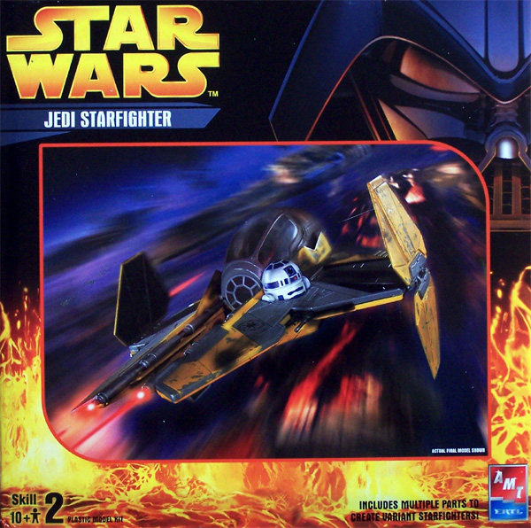
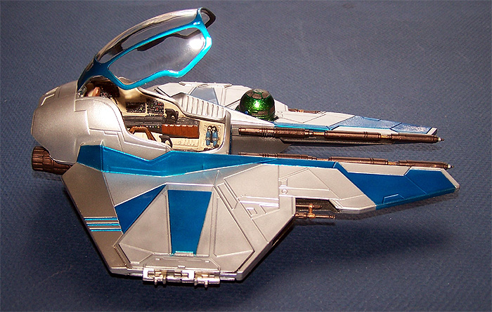
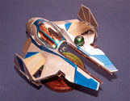
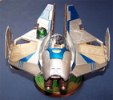
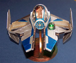
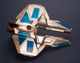
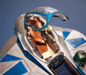

{kind=link}
{kind=link}
{kind=link}
{kind=link}
{kind=link}


AMT/Ertl Jedi Starfighter
Developmental Background
Long time ago and in a galaxy far, far away there once was a little shop that would trick your Starfighter for a moderate fee. Energy absorbing coatings, high performance plasma injectors, 8 track cassette deck; nothing was outside of the realms of possibility. Starship drivers from both sides of The Force would make their way here to achieve that custom look that for many said ‘I’m Bad’. Sadly when it was discovered that the proprietor, Angolo Lan, was employing illegal aliens from the outer rim territories the Imperial INS shut him down but from time to time those custom Starship jobs could still be found prowling the back space lanes maintaining the balance of The Force.
The Kit
In reality this is the AMT/ERTL release of the Star Wars Episode III Jedi Starfighter. Inside the medium sized box we have three sprues of parts along with an upper and lower fuselage halves and a display base. The kit provides some optional parts allowing for three different attack spoilers and three different head rests. Exterior detail consists of deep recessed panel lines and smooth surfaces. The cockpit is very well detailed with side consoles and grip controls. The parts are all of good quality with no flash or sink marks. The kit includes two good clear parts, a main canopy that is hinged and can be opened along with a front cockpit glazing. There are two metal pins included for use with the attack spoilers so they can be opened and closed. There is no pilot figure included with the kit. The instructions contain a couple of exploded views for parts assembly but do not give any tips for painting either interior or exterior. A single small sheet of decals is included with the kit but no indications for placement are given.
Construction
Construction begins with the cockpit, I elected to keep the interior colors soft and pastel. Various panels were painted black and detailed with different colors of enamels. Once the interior pieces were painted and together I washed the whole thing with a basic sludge wash. Next I began working on the exterior and this is really why I picked up this kit. Recently I received a wide selection of Alclad paints, not only the natural metal colors but the translucent colors and prismatic colors. The entire exterior of the kit is done with various shades of Alclad paint. I painted the upper and lower hulls prior to assembly and basically just applied layers of masking tape to define the different metal shades and translucent blue. The attack spoilers were also done prior to assembly with Titanium used for the inner areas. The base was done with prismatic gold to green and the droid unit was done with prismatic emerald then had contrasting panels done with magnesium. The weapons were done with burnt iron, gold and copper Alclads. The clear parts were dipped in Future, masked off and first done with a black primer followed by some aluminum then blue. Once all the paint had cured the final pieces were assembled.


You may click on the small images above to view larger pictures
Conclusions
This kit was a fun little diversion from the normal stuff. It went together very well and the lack of painting guides allowed for plenty of creative leeway for the modeler. This kit is really so simple that it would make a good started kit for kids just getting into modeling and makes for a little fun for the more experienced modeler.